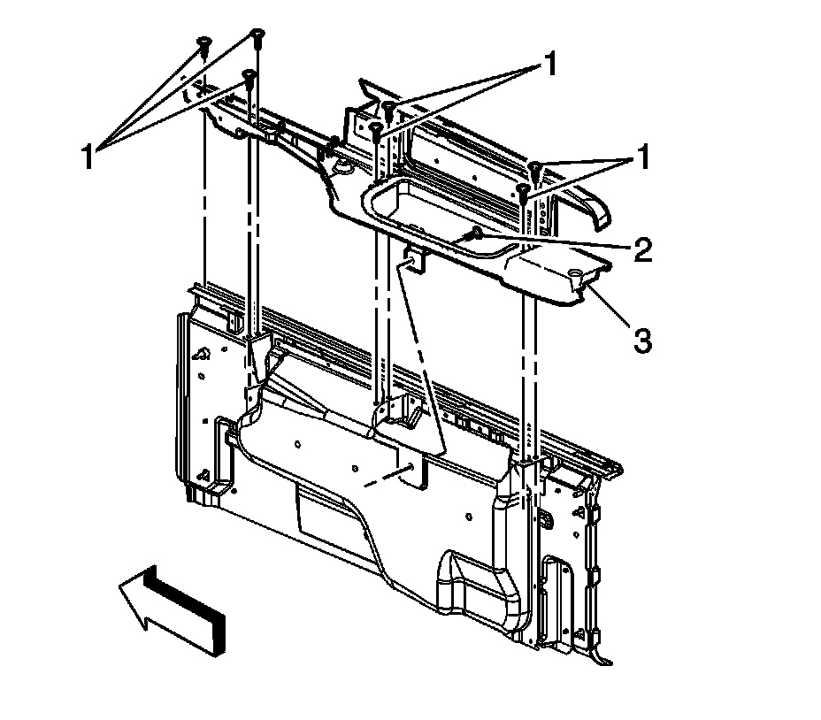

Cargo Box Stowage Box Lid Replacement
Cargo Box Stowage Box Lid Replacement
Removal Procedure
1. Lower the endgate.
2. Remove the cargo box cover assembly. Refer to Cargo Box Front Cover, Center Cover, and Rear Cover Replacement .
3. Remove the assist handle. Refer to Endgate Assist Handle Replacement (Avalanche) .
4. Remove the top drain grate.
5. Remove the cargo box bridge side inner panel. Refer to Cargo Box Bridge Side Inner Panel Replacement (Avalanche) Cargo Box Bridge Side Inner Panel Replacement (Escalade EXT) .

6. Remove the bolt (2) from inside the cargo box stowage lid assembly.
7. Remove the bolts (1) from the top of the stowage lid.
8. Remove the cargo box stowage box water run channel.
9. Remove the cargo box from the vehicle.
Installation Procedure
1. Position the cargo box stowage lid (3) to the vehicle.
Important: Ensure that the feather edge is properly sealed to the glass and side panels.
2. Install the cargo box water run channel.
Notice: Refer to Fastener Notice .
3. Install the bolts to the cargo box stowage lid (1).
Tighten the bolts to 9 N.m (80 lb in).
4. Install the bolt inside the cargo box stowage lid assembly (2).
Tighten the bolt to 9 N.m (80 lb in).
5. Install the cargo box bridge side inner panel. Refer to Cargo Box Bridge Side Inner Panel Replacement (Avalanche) Cargo Box Bridge Side Inner Panel Replacement (Escalade EXT) .
6. Install the assist handle. Refer to Endgate Assist Handle Replacement (Avalanche) .
7. Install the cargo box cover assembly. Refer to Cargo Box Front Cover, Center Cover, and Rear Cover Replacement .
8. Close the endgate.